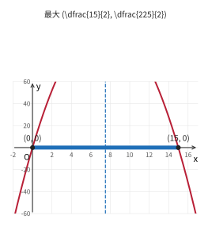
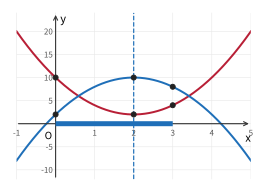
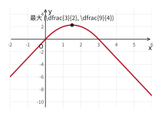
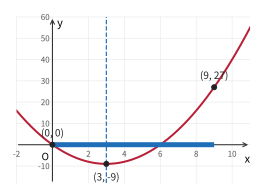
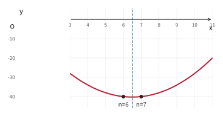

ホーム ＞ 数学I ＞ 2次関数の最大・最小
別冊章末問題の解答
1. \(y=-2x^2+8x-3\ \ (0\leqq x\leqq5)\) の最大値と最小値を求めよ。
\(y=-2(x^2-4x)-3=-2\{(x-2)^2-4\}-3=-2(x-2)^2+5\)。上に凸、軸 \(x=2\) は範囲内。最大は \(x=2\) のとき \(5\)。
両端：\(x=0:\ -3\)、\(x=5:\ -2\cdot9+5=-13\)。軸から遠い \(x=5\) で最小 \(-13\)。
（例題1の型）
【答案】
\[x=2\ \text{で最大}\ 5,\ \ x=5\ \text{で最小}\ -13\]答
2. \(a\ \text{は定数とする。}f(x)=x^2-4ax\ \ (0\leqq x\leqq2)\ \text{の最小値}\ m(a)\ \text{を求めよ。}\)
\(f(x)=(x-2a)^2-4a^2\)。軸 \(x=2a\)。
\(2a<0\)（\(a<0\)）：\(m=f(0)=0\)。\(0\leqq2a\leqq2\)（\(0\leqq a\leqq1\)）：\(m=f(2a)=-4a^2\)。\(2a>2\)（\(a>1\)）：\(m=f(2)=4-8a\)。
（例題2の型）
【答案】
\[m(a)=\begin{cases}0&(a<0)\\ -4a^2&(0\leqq a\leqq1)\\ 4-8a&(a>1)\end{cases}\]答
3. \(a\ \text{は定数とする。}f(x)=x^2-2ax+2\ \ (0\leqq x\leqq2)\ \text{の最大値}\ M(a)\ \text{を求めよ。}\)
軸 \(x=a\)、中央 \(x=1\)。\(a<1\)：右端が遠い \(M=f(2)=4-4a+2=6-4a\)。\(a\geqq1\)：左端が遠い \(M=f(0)=2\)（\(a=1\) で両端とも \(2\)）。
（例題3の型）
【答案】
\[M(a)=\begin{cases}6-4a&(a<1)\\ 2&(a\geqq1)\end{cases}\]答
4. \(y=(x^2-4x)^2+2(x^2-4x)\) の最小値を求めよ。
\(t=x^2-4x=(x-2)^2-4\geqq-4\)。\(y=t^2+2t=(t+1)^2-1\)。頂点 \(t=-1\) は \(t\geqq-4\) の内。最小は \(t=-1\) のとき \(-1\)。
\(x^2-4x=-1\) → \(x=2\pm\sqrt3\)。
（例題4の型）
【答案】
\[x=2\pm\sqrt3\ \text{のとき最小値}\ -1\]答
5. \(x\geqq0,\ y\geqq0,\ x+3y=6\) のとき \(,\ xy\) の最大値と最小値を求めよ。
\(x=6-3y\geqq0\) より \(0\leqq y\leqq2\)。\(xy=(6-3y)y=-3y^2+6y=-3(y-1)^2+3\)。軸 \(y=1\) は範囲内で最大 \(3\)（\(x=3\)）。両端 \(y=0\)：0、\(y=2\)：0。最小 \(0\)。
（例題5の型）
【答案】
\[\text{最大 }3\ (x,y)=(3,1),\ \ \text{最小 }0\]答
6. 長さ \(30\) m の柵を使い、壁を一辺として長方形の囲いをつくる。囲いの面積の最大値と、そのときの壁に垂直な辺の長さを求めよ。
文字を決める
壁に垂直な辺を \(x\) m とすると、壁に平行な辺は \(30-2x\) m。長さが正なので \(0<x<15\)。
面積 \(S\) を \(x\) の関数としてグラフにする。太線が範囲 \(0<x<15\)。

面積の式
\[S=x(30-2x)=-2x^2+30x=-2\left(x-\dfrac{15}{2}\right)^2+\dfrac{225}{2}\]最大値
\(x=\dfrac{15}{2}\) は範囲 \(0<x<15\) に含まれるので、最大値は
\[\dfrac{225}{2}\ \text{m}^2\]（例題6の型）
【答案】
\[x=\dfrac{15}{2}\ \text{のとき最大 }\dfrac{225}{2}\ \text{m}^2\]答
7. \(f(x)=a(x^2-4x)+b\)（\(a\neq0\)）の \(0\leqq x\leqq3\) における最大値が \(10\)、最小値が \(2\) であるとき、定数 \(a,\ b\) の値を求めよ。
平方完成
\(f(x)=a(x-2)^2-4a+b\)。軸 \(x=2\) は定義域 \(0\leqq x\leqq3\) の内部にある。
\[f(0)=b,\quad f(2)=b-4a,\quad f(3)=b-3a\]赤が \(a>0\)（下に凸）、青が \(a<0\)（上に凸）の場合。太線が定義域 \(0\leqq x\leqq3\)。

\(a>0\) のとき
最小は頂点、最大は軸から遠い \(x=0\)。
\[b=10,\ \ b-4a=2\ \Rightarrow\ a=2\]\(a<0\) のとき
最大は頂点、最小は軸から遠い \(x=0\)。
\[b-4a=10,\ \ b=2\ \Rightarrow\ a=-2\]答え
\(a\neq0\) で、どちらも条件に合う。
（例題7の型）
【答案】
\[(a,b)=(2,10),\ (-2,2)\]答
8. \(0\leqq x\leqq 3\) における \(f(x)=x^2-2ax+3a\) の最小値を \(m(a)\) とする。\(m(a)\) の最大値とそのときの \(a\) の値を求めよ。
軸の位置で場合分け
\(f(x)=x^2-2ax+3a=(x-a)^2-a^2+3a\)、\(0\leqq x\leqq3\)。軸 \(x=a\)。
\[m(a)=\begin{cases}3a&(a<0)\\3a-a^2&(0\leqq a\leqq 3)\\9-6a+3a&(a>3)\end{cases}\]場合分けした \(m(a)\) を、横軸 \(a\) のグラフにすると、\(a=\dfrac{3}{2}\) で最大になる。

各場合の最大
\(a<0\)：増加で \(m(a)<0\)。\(a>3\)：傾き \(-3\)（負）で減少。
\[0\leqq a\leqq 3:\ m(a)=-\left(a-\dfrac{3}{2}\right)^2+\dfrac{9}{4}\]最大値
\(a=\dfrac{3}{2}\) は \(0\leqq a\leqq3\) に含まれるので、最大値は \(\dfrac{9}{4}\)。
（例題8の型）
【答案】
\[a=\dfrac{3}{2}\ \text{のとき最大 }\dfrac{9}{4}\]答
9. \(-3\leqq x\leqq 3\) における \(y=x^4-6x^2+0\) の最大値・最小値を求めよ。
置き換え
\(t=x^2\) とおく。\(-3\leqq x\leqq 3\) より \(0\leqq t\leqq 9\)。
\[y=t^2-6t=\left(t-3\right)^2-9\]横軸を \(t\) としたグラフ（太線が \(0\leqq t\leqq9\)）。

頂点と端点
頂点 \(t=3\) は範囲内。端点 \(t=0,\ 9\)。
\[y(0)=0,\quad y(9)=27\]最大・最小
\[\text{最大値 }27\ (x=\pm3),\quad\text{最小値 }-9\ (x=\pm\sqrt{3})\]（例題9の型）
【答案】
\[\text{最大 }27,\ \text{最小 }-9\]答
10. 整数 \(n\) に対する \(f(n)=n^2-13n+2\) の最小値と、そのときの \(n\) を求めよ。
平方完成
\(f(n)=n^2-13n+2=\left(n-\dfrac{13}{2}\right)^2- \dfrac{161}{4}\)。頂点は \(n=\dfrac{13}{2}\)。
点線は軸 \(n=\dfrac{13}{2}\)。整数の点は、軸の両隣の2つが同じ高さで最も低い。

頂点に近い整数
\[n=6,\ 7\ \text{が頂点から等距離 }\left(\pm\dfrac12\right)\]最小値
\[f(6)=f(7)=-40\]（例題10の型）
【答案】
\[n=6,\ 7\ \text{のとき最小 }-40\]答